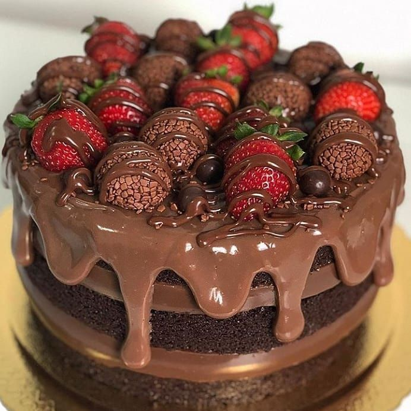

Bolo de Chocolate

Descrição
O bolo de chocolate é um clássico da confeitaria, perfeito para festas, lanches ou para matar aquela vontade de comer doce.
Esta receita é simples, fofinha e com um sabor intenso de chocolate que agrada a todos.
Ingredientes
- 4 ovos
- 2 xícaras de açúcar
- 1 xícara de óleo
- 1 xícara de chocolate em pó
- 2 xícaras de farinha de trigo
- 1 xícara de leite
- 1 colher de sopa de fermento em pó
Passos
- Preaquece o forno a 180°C e unta uma forma com manteiga e farinha.
- No liquidificador, bate os ovos, o açúcar, o óleo, o chocolate e o leite.
- Transfere para uma tigela e mistura a farinha e o fermento até ficar homogêneo.
- Despeja a massa na forma e leva ao forno por cerca de 35 a 40 minutos.
- Retira, deixa arrefecer e, se quiser, cobre com ganache de chocolate.
Voltar ao Início